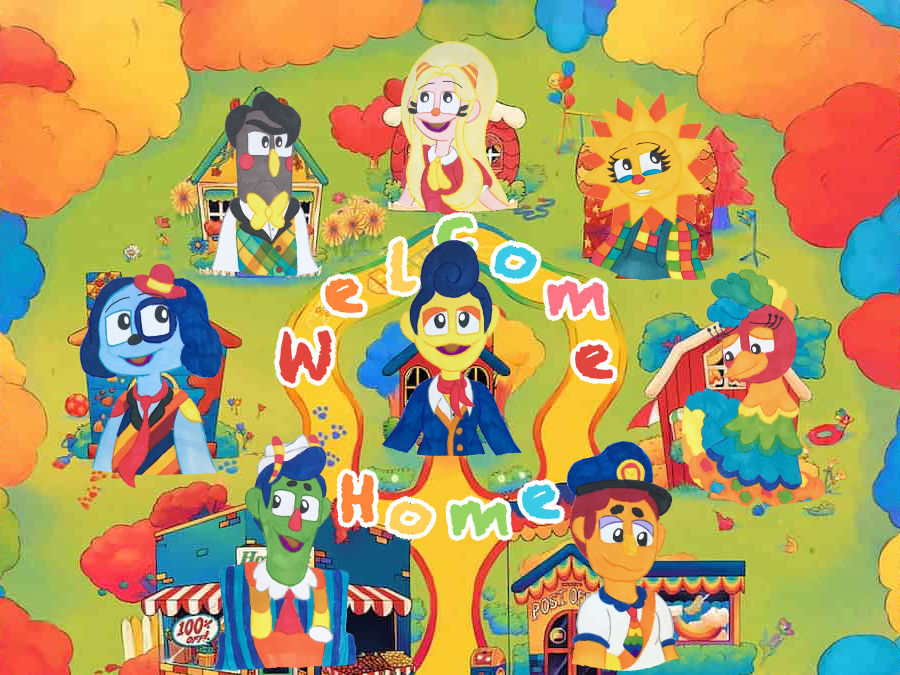
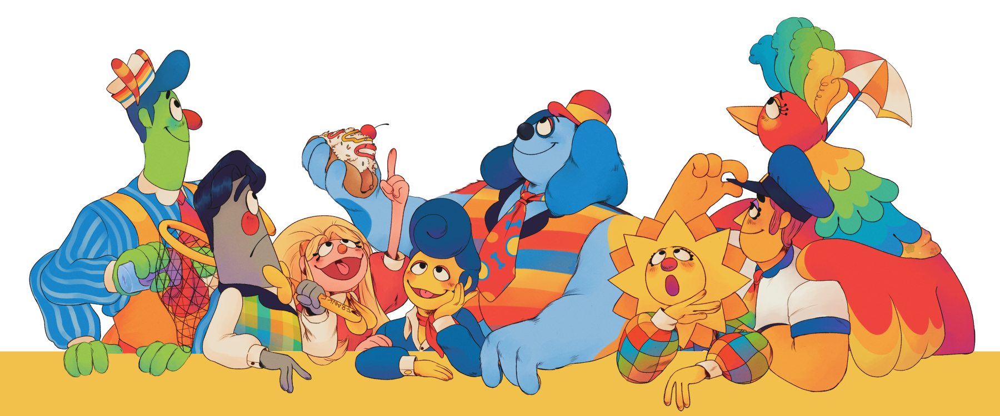

Feel free to explore our neighborhood and learn more about our neighbors now lost to obscurity! Thank you for visiting!
"With a hop, skip, and a jump, you are ushered into the colorful, serendipitous world of Welcome Home! It only takes one stroll down the neighborhood to know this is just the nicest little place you’ve ever seen! Watch Wally and his colorful array of friendly neighbors learn about the vibrant world around them and take part in nonsensical fun!"
The wiki is NOT an official site owned by Clown, and all content is unaffiliated with their work. New content will only appear from the original website! This is just a fan collaborative database dedicated to the Welcome Home project that tries to document as much information as possible about Clown's work, made by fans and for fans.
The Neighborhood
Published on 2/3/25
Author:Madelyn W
Home is where the heart is, and Welcome Home’s residents are the heart of its neighborhood! Even if you don’t live there, you’re still one of its most important residents! But don’t worry — with the help of this colorful array of neighbors, it’ll feel just like home in no time at all!
Wally
“Wally Darling is the friendliest neighbor in Welcome Home, and perhaps even the best painter, too. With a smile like his, it’s hard to disagree! Always eager to make new friends and show them around the neighborhood, Wally is happy to lend a helping hand. But you already knew that, didn’t you?”
Frank
“Arguably the smartest neighbor in Welcome Home, Frank Frankly is the resident bookworm with an expertise on butterflies. Despite being the grumpiest and greyest of this colorful cavalcade of neighbors, it’s good to have someone so organized and matter-of-fact amidst the bunch. After all, he enjoys being frank, even if it means being Frank, whatever that means! He is Julie’s best friend.”
Julie
“Undoubtedly the cheeriest neighbor a puppet could ask for, Julie Joyful is Welcome Home’s happiest resident. Amidst such a rainbow of brightly colored neighbors, that’s really saying something! Upbeat, silly, and always ready to play with her friends, there’s never a boring day in Welcome Home when Julie’s around. She is Frank’s best friend.”
Sally
“The most rambunctious resident in Welcome Home, Sally Starlet shines above the rest. She’s a firecracker who is willing to let her imagination run wild in the name of a new adventure, albeit at the occasional expense of her more cautious neighbors. Thankfully, she’s got a good head on her shoulders, and perhaps one might say a sunny disposition to match!”
Poppy
“Perhaps the most frantic, frazzled, and feathered neighbor in Welcome Home, Poppy Partridge is the resident chicken, so to speak. From a sprained beak to sunburned feathers, she always thinks of the worst outcome to a pleasant situation. Then again, it never hurts to have a neighbor with a first aid kit on hand.”
Eddie
“Reliable, kind, and ever determined, Eddie Dear is the best mailman Welcome Home has ever had, albeit the only one. Despite being a bit of a clumsy and forgetful fellow, Eddie loves his job and always manages to deliver everyone’s mail right on schedule.”
Howdy
“Howdy Pillar is Welcome Home’s friendliest and happiest shopkeeper! This colorful caterpillar knows his store like the back of his hands, which is impressive considering how many he has. Charismatic, quick-witted, and remarkably jolly, Howdy always seems to have whatever his neighbors need with a price that just can’t be beat!”
Barnaby
“A goofy layabout with a love for jokes, Barnaby B. Beagle is Welcome Home’s funniest neighbor. Always ready with a joke on hand or even just a silly observation, this big blue beagle always knows how to have fun, much to the dismay of some of Home’s grumpier residents.”
Transcripts from Mystery Audio
It is currently unknown whether these three recovered audio tracks are from episodes whose visuals have yet to be found, or from a piece of supplementary material such as a storybook record or a radio play. Regardless, these three sweet scenes provide us with a peek into the lives of our favorite neighbors!
A u d i o 1
Featuring: Howdy, Wally, And Barnaby
HOWDY: Howdy-do, fellas! What can I get for you two today?
BARNABY: Hiya Howdy, I think we’re gonna enjoy ourselves the usual.
HOWDY: A usual for my usuals? Comin’ right up, pal-ly!
WALLY: The usual? I thought we were getting hot dogs.
BARNABY: That is our usual, little buddy, it means somethin’ you and me get
all the time! Kinda like our morning perusal.
WALLY: You mean our walk?
BARNABY: Yeah, but I like perusal better! Makes me feel like a fancy, high-class
pooch! A pedigree with some degrees, if you will.
WALLY: Oh.
HOWDY: Alrighty! I gotta bloodhound in a whirlwind of trouble and an old
reliable dog! So what’s the gaff today, Barn?
BARNABY: I got a good one that’s been brewin’ in this pot of mine all day!
What do you call a caterpillar after a month-long nap? A butterfly! But if
you ask me, I’d call the poor guy a doctor!
[Howdy laughs comically and over the top, slapping the counter. Wally laughs
too, announcing the words, “ha ha ha,” out loud.]
HOWDY: That’s a hoot! A holler even! You always never disappoint! Say, Wally,
what about you? You got any silly yarns for me today?
WALLY: No, but I have a joke.
[Howdy laughs again, shaking his head.]
BARNABY: What’d I tell you? He’s a natural and that was just a taste! Go on,
kid.
WALLY: Okay. How does Barnaby eat his hot dog?
HOWDY: How?
WALLY: He relishes it!
[Howdy laughs heartily as he did the first time, slapping the counter top.
Barnaby laughs too.]
HOWDY: He sure does! Boy, you’re getting the hang of this funny business, Walls!
It won’t be long before you’re the one paying for these hot dogs!
WALLY: That’s okay, I like when Barnaby buys them.
BARNABY: It’s like ya said, Howdy, we’re a couple’a usuals who know what we
like.
A u d i o 2
Featuring:Julie and Frank
JULIE: [Excitedly and quickly] Frank, Frank, Frank! Oh Frank, won’t you
play a game with me?
FRANK: Oh, Julie, good morning. No, I can’t right now. I’m watering my plants,
see?
JULIE: I do see! I hear them too! Gee, they sure have a lot to say!
FRANK: [Baffled] What? My Sole and Lyco? What are they saying to you?!
JULIE: [Interrupting him.] Oh, ssh, ssh! Hold on just a second, Frank! They’re
telling me right now! ….Mhm… Uh-huh… Oh? Oh! I see- Oh, you don’t say!
[Julie continues to speak to the plants through affirmative sounds. Frank
nervously mumbles and tuts from behind her.]
FRANK: Well? What did they say?
JULIE: Your tomatoes think you have a very love-o-ly bowtie today!
FRANK: They do?-
[Frank stops mid-sentence to lean towards the tomatoes and mumble a soft,
“thank you,” before returning his attention to Julie.]
FRANK: What else are they saying?
JULIE: Well- they also think your marigolds could be a little merrier! But I
wouldn’t say that in front of your flowers!
[Frank pauses again to look at his tomatoes, this time mumbling, “I’m sorry,
I’ll see what I can do.”]
JULIE: They also had one last thing to say…. They think… That you’ve done such
a good job gardening… That you should go play jump rope with Julie to celebrate!
[Frank sighs loudly in exasperation as Julie laughs.]
FRANK: [Distressed.] Oh Julie! You were fibbing about the tomatoes telling
you all that, weren’t you!?
JULIE: No, Frank, I was telling the truth! Honest! Your marigolds really are
very, very rude!
A u d i o 3
Featuring: Sally, Eddie and Poppy
EDDIE: Mail call! I got mail here for Ms. Partridge!
SALLY: I’ll be taking that!
EDDIE: Pardon me for askin’ but-
SALLY: You’re pardoned.
EDDIE: Well, I could have sworn this was Poppy’s barn! I might’ve made a wrong
turn at that game of hopscotch outside of Julie’s house! Those games always get me turned around…
SALLY: Of course this is her barn, mailman! But she just so happens to have her
feathers full at the moment!
POPPY: Hello, dearie! I’m right here- At least, I think I am- Oh goodness, it’s
hard to see past all this yarn!
EDDIE: [Mumbled] Oh darlin’, what has she got you wearing?
SALLY: Can’t you see she is a beautiful beanstalk? The perfect outfit for the
star of my next play!
POPPY: Oh yes! I forgot to ask what role this is for… It was a bit sprung on me.
SALLY: It is for Jack and the Beanstalk, obviously! But I have taken some
artistic liberties of course- I call this rendition- wait for it- Sally and the Beanstalk!
EDDIE: Oh boy…. So Sally and the Beanstalk is a little like that story about
that fella who traded some cows for a couple’a beans? The same beans that eventually grow into a giant beanstalk he decides to climb up?
SALLY: Yes!
POPPY: [Whispering fearfully] …Climbed…?
EDDIE: And then he runs into that big and mean ol’ giant at the top? The very
same who chases after Jack all the way to the bottom?
SALLY: Yes, yes!
POPPY: [Whispering even more frantically] …G-Giant…?!
EDDIE: And when Jack gets to the bottom, doesn’t he cut down that beanstalk
with a big axe?
SALLY: Yes, yes, that’s exactly it! But it will be yours truly as the one with
the big axe instead!
POPPY: [Louder and afraid] Big axe?!
[Poppy lets out a dramatic squawk and faints with a loud thud.]
SALLY: Oh Poppy, don’t worry! After some rehearsals, you will feel as strong
and sturdy as the role you were born to play!
About us!
The Welcome Home Restoration Project is a team of anonymous individuals dedicated to compiling, restoring, and archiving what few remnants of Welcome Home have been uncovered. It is through these collective efforts that we will awaken the memory of this lost piece of media. We strive to establish a friendly and open community of friends, family, and fans, just like the colorful and quaint neighbors in our beloved Home!
Love is clear in the messages of Wally Darling and is as much of a hallmark to him as his charismatic smile, his cheery disposition, and his eagerness to understand the world around him. We too hope to spread this feeling of everlasting joy, caring, understanding, and acceptance to all in the hopes that you will join us in our thorough exploration. Together, we will make this house a home!
Visitors may wonder how we came to uncover such a show, where we obtained these works, and the efforts taken to restore them to the best of our ability. To that we are happy to open our front door to you, neighbor!
